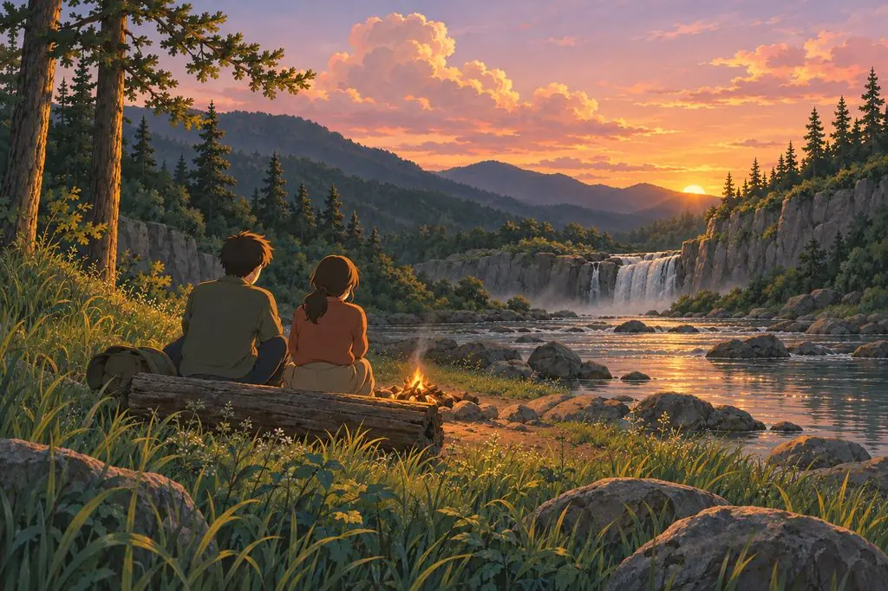
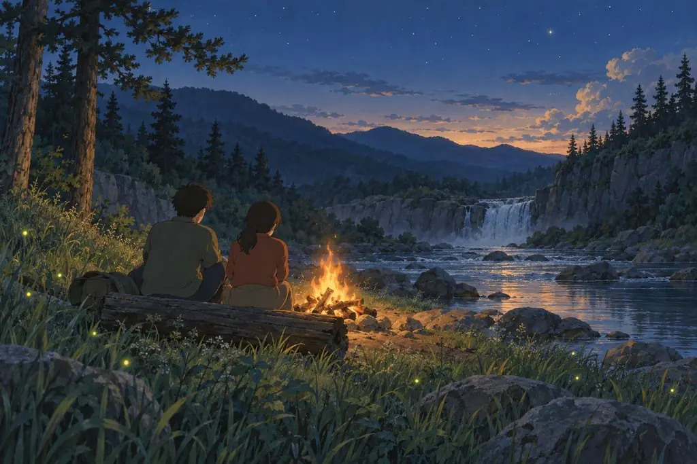
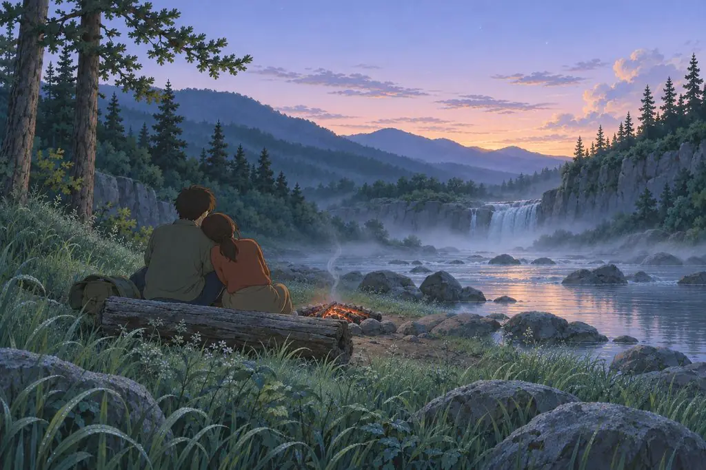
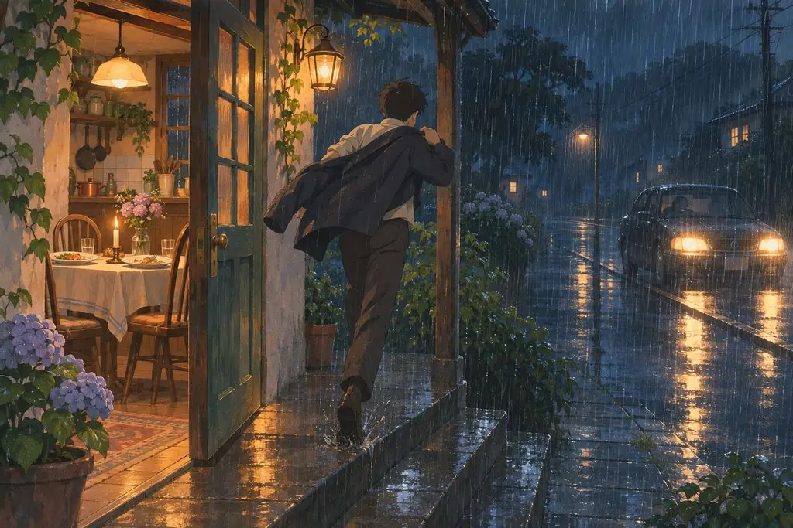
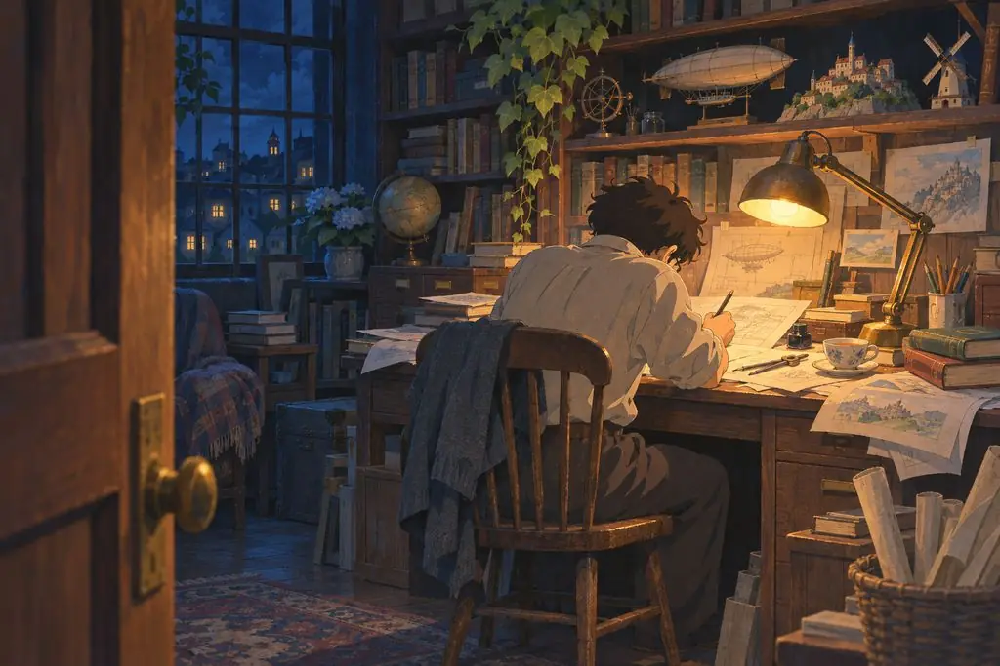
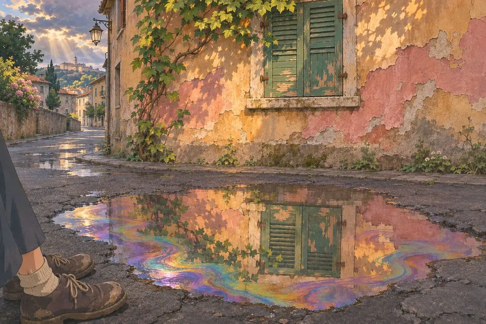
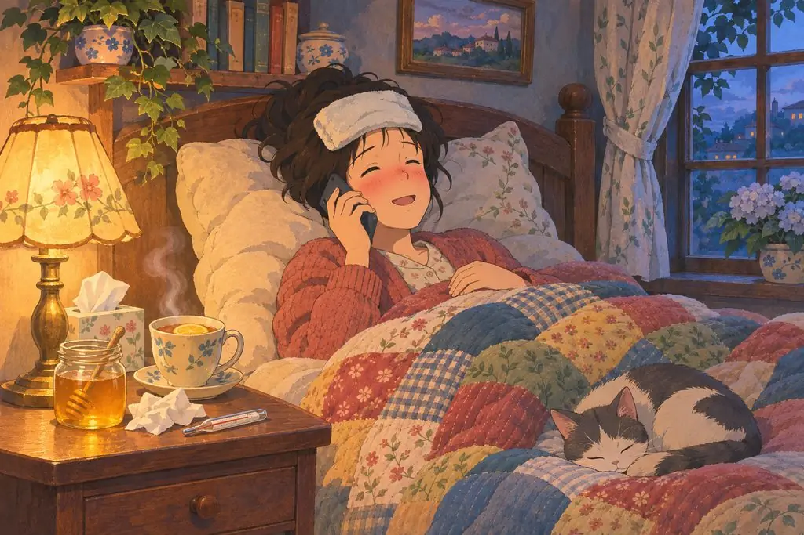
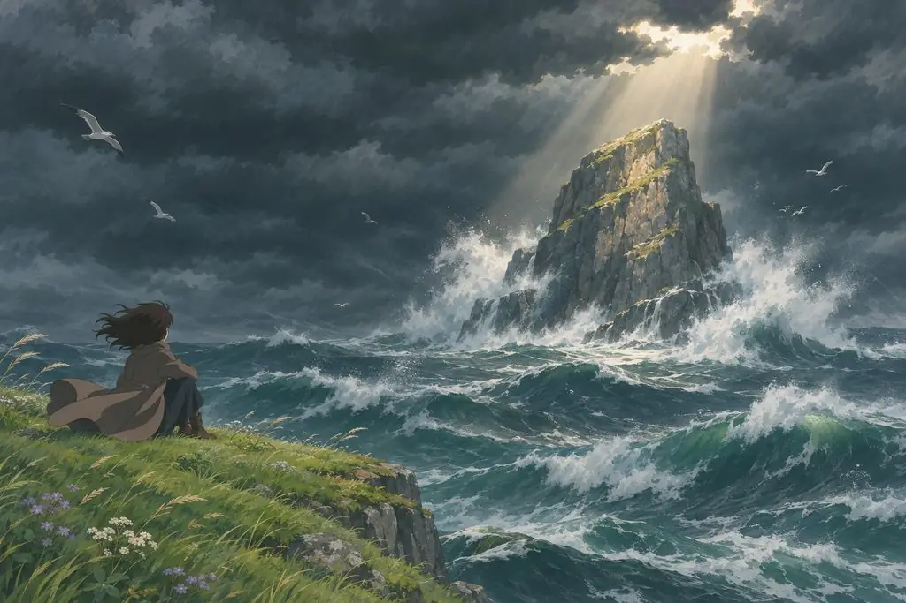
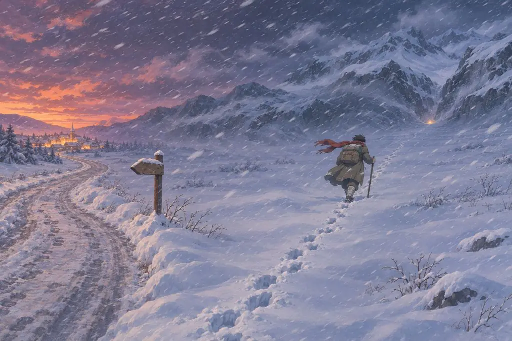

2026
Статья психолога
На что можно смотреть бесконечно
Почему список качеств «идеального партнёра» рассыпается в первый же плохой вторник — и как вместо человека, который даёт нам нужное, выбрать того, чья суть вызывает восхищение
Когда спрашиваешь людей, какого партнёра они ищут, почти всегда получаешь в ответ аккуратный список.
- Чтобы любил.
- Чтобы уважал.
- Чтобы помнил про цветы и подарки.
- Чтобы был заботливым, честным, внимательным, добрым.
Безупречный список. Правда хороший — в нём нет ни одного лишнего слова, и все эти вещи действительно важны. Более того, в глубине души они нужны каждому из нас. Проблема вовсе не в том, чтобы хотеть тепла и порядочности. Проблема прячется чуть глубже — в той маленькой, едва заметной оптике, через которую этот список составлен.
Должностная инструкция для близкого человека
Если прочесть эти пункты вслух и прислушаться, выяснится любопытная вещь: почти каждый из них отвечает на один-единственный вопрос — что этот человек будет делать для меня?
Любить меня. Уважать меня. Быть внимательным ко мне. Беречь мой покой.
В этом нет ничего стыдного или эгоистичного: мы идём в отношения не ради подвига, нам естественно хочется, чтобы рядом с другим было хорошо. Но у такого подхода есть один конструктивный изъян, о который рано или поздно бьётся любая пара.
Живой человек не будет круглосуточно выполнять свою должностную инструкцию.
Он будет бывать резким, уставшим, закрытым, несправедливым. Будет проваливаться в собственную тоску и срываться по пустякам. А иногда жизнь подбрасывает сюжет ещё обиднее: вы честно выбрали «заботливого человека», и он действительно потрясающе заботлив — с мамой, со старыми друзьями, с растерянным коллегой, с соседской собакой. Со всем миром, кроме вас.
Разумеется, с этим не нужно молча мириться. О таких вещах говорят вслух, просят, спорят, ищут договорённости. Речь совсем не о терпении любой ценой. Речь о фундаменте: если вся ваша любовь держится на том, что партнёр регулярно приносит вам на подносе, то в каждый его неудачный день вашей любви просто не на что опереться. Контракт нарушен — чувство повисает в воздухе.
Огонь, вода и способ жить
Когда мы любим человека по-настоящему, в самой сердцевине этого чувства обычно лежит не благодарность за услуги. Там лежит восхищение тем, как он устроен. Тем, что он самим фактом своего существования, своими выборами, своей непроизвольной натурой проявляет в мире нечто, чего не проявляет никто другой — или проявляет с совершенно неповторимой интонацией.
Это не поведение «в мою сторону». Это его собственная ось.
Есть старая присказка о том, что бесконечно можно смотреть на три вещи: как горит огонь, как течёт вода и как работает другой человек. Пожалуй, лучший совет про выбор партнёра звучит ровно так же: ищите человека, на которого вы сможете смотреть бесконечно.
и вода
Не на то, что он вам выдаёт. А на то, как он живёт. На то качество, которое каждый раз заставляет вас внутренне замереть и улыбнуться — даже в ту минуту, когда оно доставляет вам массу неудобств.
У каждого восхищения есть своя цена
Вблизи это выглядит гораздо менее романтично, чем в кино, и гораздо более живо.

Представьте человека-спасателя, для которого чужая беда — абсолютный приоритет. Он сорвётся среди ночи к другу в аварию, бросит остывающий ужин в вашу годовщину, исчезнет в единственный общий выходной. Вам будет больно, зло, до слёз несправедливо — и всё равно где-то под этой злостью останется тихое потрясение от того, что он такой. Что он умеет и не может иначе.

Или одержимого своим делом трудягу. Вы влюбились в то, как у него горят глаза, когда он говорит о работе. Отлично — берите трудягу, только не делайте вид, что не знали цену. Вас гарантированно ждут одинокие вечера, чужая усталость и бесконечные разговоры о проектах. Но однажды вы заглянете к нему в комнату, увидите его сгорбленную спину в свете настольной лампы и вдруг поймаете себя на том, что любуетесь им, как картиной в музее.


Кто-то умеет видеть красоту там, где остальные проходят мимо — в бензиновой луже, в облупившейся штукатурке старого дома, в безнадёжно испорченном дне. Кто-то даже с высокой температурой, едва ворочая языком, искренне расспрашивает, как прошла операция у тёти соседа.

А кто-то в любой шторм сначала приводит в порядок самого себя. Не бросается спасать, не растворяется в панике, а хладнокровно возвращает себе опору. Одному это покажется холодным эгоизмом. Другой будет смотреть на него и чувствовать странный покой — как человек, который смотрит на скалу в бурю.

А рядом живёт невыносимо упрямый человек, который признаёт только собственный маршрут. С ним трудно на каждом шагу, из-за его несгибаемости рождаются сотни ненужных конфликтов — но что бы на него ни обрушилось, он упрямо идёт своей дорогой, хоть ты тресни. И вы, ругаясь на него вслух, втайне им восторгаетесь.
Ни одно из этих качеств не обещает вам комфорта. Чаще — ровно наоборот. За каждую сильную черту приходится платить. Но подлинное восхищение, в отличие от удобства, от этой цены не умирает.
Почерк, который нельзя подделать
Чтобы научиться замечать эту ось в других, проще всего сначала нащупать её в себе.
Что делает вас именно вами? Допустим, вы добрый человек. Добрых людей на земле миллионы, но так, как добры вы — с вашими паузами, вашим юмором, вашей мерой участия, — не добр больше никто. У вашей доброты есть собственный почерк.
Или спросите себя иначе: что вы сделаете при любых обстоятельствах, просто потому что поступить иначе означало бы ломать себя через колено? Если предать эту точку, внутри немедленно поднимается глухой, невыносимый разлад: «Это не я. Так нельзя. Я только что предал сам себя». Для кого-то это — оставаться человечным даже к тем, кто этого не заслужил. Для кого-то — не бросать начатое на полпути. Для кого-то — искать светлое в самой густой темноте.
В терапии принятия и ответственности это называют ценностями. Ценность — не цель, которую можно достичь, отпраздновать и вычеркнуть из блокнота. Это направление компаса, по которому человек идёт всю жизнь. Не роль для зрителей и не услуга для близких, а почва, на которой он стоит.
И у другого человека есть точно такая же почва.
Незыблемая часть
Именно её и стоит искать, когда вы присматриваетесь к тому, с кем хотите разделить жизнь.
Ищите в человеке то, что вызывает у вас тихий, безошибочный восторг — такой, которому не страшны ни ссора, ни расстояние, ни болезнь. Вы можете не разговаривать с ним второй день, можете жить в разных городах, он может быть слабым и не в духе — но стоит вам просто подумать о нём, вспомнить, какой он, и внутри становится тепло. Хочется быть к этому человеку поближе.
В какой-то момент можно сделать удивительное, почти пугающее открытие: в этой точке становится не так уж важно, любит ли он вас в ответ. Вы любите саму его суть — то, что такой человек вообще существует на свете.
И вот с таким человеком уже можно пробовать строить жизнь.
Получится — огромное счастье.
Не получится — будет больно и жалко, но не катастрофично. Ничего не обратится в пепел. Потому что даже если разойдутся бытовые привычки, угаснет страсть, не сложится общий дом и пути разойдутся навсегда, у вас внутри останется нечто неразрушимое — та самая незыблемая часть отношения к человеку. К тому, кто он есть.
Список требований «каким он должен быть для меня» способен рассыпаться в любой тяжёлый день.
А то, на что можно смотреть бесконечно, никуда не девается.
не девается